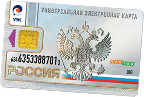

Согласно Федерального закона «Об организации предоставления государственных и муниципальных услуг» (№210-ФЗ) от 27 июля 2010 года в Краснодарском крае появилась возможность получить универсальную электронную карту.
Проект «Универсальная электронная карта» - важный шаг по переводу государственных, муниципальных и коммерческих услуг на качественно новый уровень. Данный проект обеспечивает жителям края более совершенные и безопасные механизмы взаимодействия с различными типами структур, простой и эффективный способ получения информации, а также минимизирует затраты времени, связанные с оказанием этих услуг.
Универсальная электронная карта заменила социальные карты жителей субъектов РФ и дает возможность использовать ее как: полис обязательного медицинского страхования, страховое свидетельство обязательного пенсионного страхования, платежную банковскую карту и д.р. Универсальная электронная карта выдается бесплатно всем гражданам, имеющим постоянную прописку в Краснодарском крае, достигшим 14 лет, на основании заявления, поданного при личном посещении пункта приема заявлений на получение универсальных электронных карт (с 1 января 2013 года).
Универсальная электронная карта выдается бесплатно гражданам Российской Федерации, достигшим 14 лет, на основании заявления, поданного при личном посещении пункта приема заявлений на получение универсальных электронных карт.